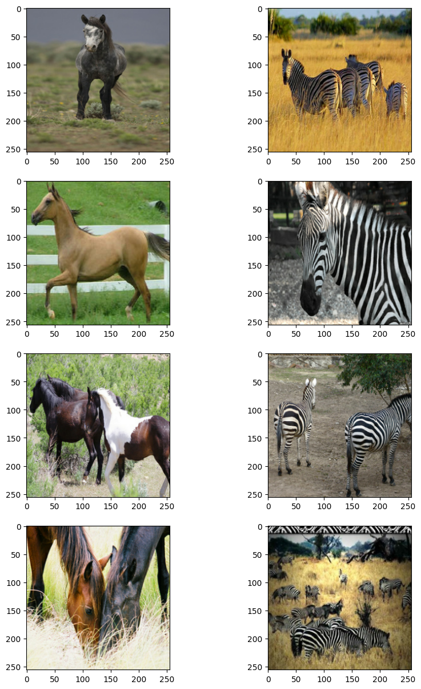
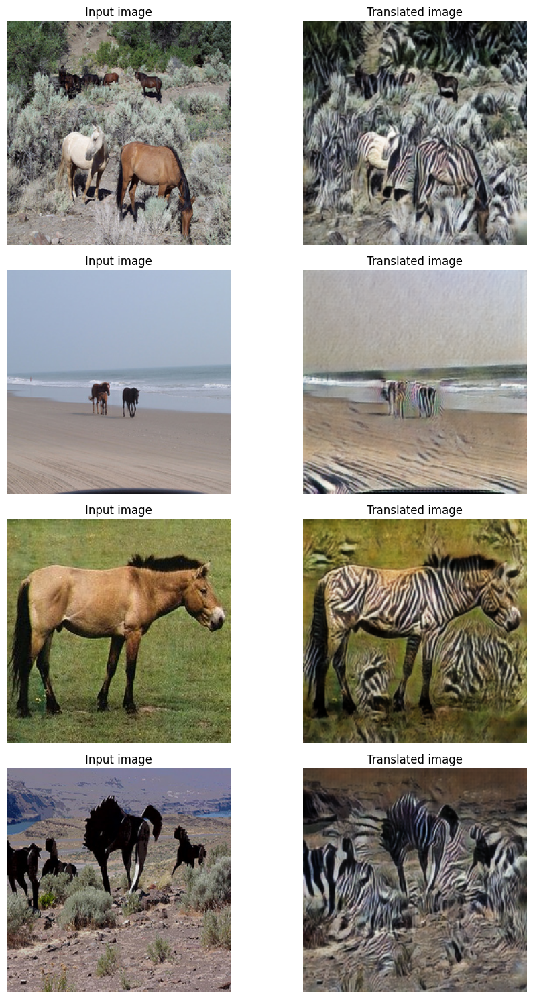

CycleGAN
Author: A_K_Nain
Date created: 2020/08/12
Last modified: 2024/09/30
Description: Implementation of CycleGAN.

CycleGAN
CycleGAN is a model that aims to solve the image-to-image translation problem. The goal of the image-to-image translation problem is to learn the mapping between an input image and an output image using a training set of aligned image pairs. However, obtaining paired examples isn't always feasible. CycleGAN tries to learn this mapping without requiring paired input-output images, using cycle-consistent adversarial networks.
Setup
import os
import numpy as np
import matplotlib.pyplot as plt
import tensorflow as tf
import keras
from keras import layers, ops
import tensorflow_datasets as tfds
tfds.disable_progress_bar()
autotune = tf.data.AUTOTUNE
os.environ["KERAS_BACKEND"] = "tensorflow"
Prepare the dataset
In this example, we will be using the horse to zebra dataset.
# Load the horse-zebra dataset using tensorflow-datasets.
dataset, _ = tfds.load(name="cycle_gan/horse2zebra", with_info=True, as_supervised=True)
train_horses, train_zebras = dataset["trainA"], dataset["trainB"]
test_horses, test_zebras = dataset["testA"], dataset["testB"]
# Define the standard image size.
orig_img_size = (286, 286)
# Size of the random crops to be used during training.
input_img_size = (256, 256, 3)
# Weights initializer for the layers.
kernel_init = keras.initializers.RandomNormal(mean=0.0, stddev=0.02)
# Gamma initializer for instance normalization.
gamma_init = keras.initializers.RandomNormal(mean=0.0, stddev=0.02)
buffer_size = 256
batch_size = 1
def normalize_img(img):
img = ops.cast(img, dtype=tf.float32)
# Map values in the range [-1, 1]
return (img / 127.5) - 1.0
def preprocess_train_image(img, label):
# Random flip
img = tf.image.random_flip_left_right(img)
# Resize to the original size first
img = ops.image.resize(img, [*orig_img_size])
# Random crop to 256X256
img = tf.image.random_crop(img, size=[*input_img_size])
# Normalize the pixel values in the range [-1, 1]
img = normalize_img(img)
return img
def preprocess_test_image(img, label):
# Only resizing and normalization for the test images.
img = ops.image.resize(img, [input_img_size[0], input_img_size[1]])
img = normalize_img(img)
return img
Create Dataset objects
# Apply the preprocessing operations to the training data
train_horses = (
train_horses.map(preprocess_train_image, num_parallel_calls=autotune)
.cache()
.shuffle(buffer_size)
.batch(batch_size)
)
train_zebras = (
train_zebras.map(preprocess_train_image, num_parallel_calls=autotune)
.cache()
.shuffle(buffer_size)
.batch(batch_size)
)
# Apply the preprocessing operations to the test data
test_horses = (
test_horses.map(preprocess_test_image, num_parallel_calls=autotune)
.cache()
.shuffle(buffer_size)
.batch(batch_size)
)
test_zebras = (
test_zebras.map(preprocess_test_image, num_parallel_calls=autotune)
.cache()
.shuffle(buffer_size)
.batch(batch_size)
)
Visualize some samples
_, ax = plt.subplots(4, 2, figsize=(10, 15))
for i, samples in enumerate(zip(train_horses.take(4), train_zebras.take(4))):
horse = (((samples[0][0] * 127.5) + 127.5).numpy()).astype(np.uint8)
zebra = (((samples[1][0] * 127.5) + 127.5).numpy()).astype(np.uint8)
ax[i, 0].imshow(horse)
ax[i, 1].imshow(zebra)
plt.show()

Building blocks used in the CycleGAN generators and discriminators
class ReflectionPadding2D(layers.Layer):
"""Implements Reflection Padding as a layer.
Args:
padding(tuple): Amount of padding for the
spatial dimensions.
Returns:
A padded tensor with the same type as the input tensor.
"""
def __init__(self, padding=(1, 1), **kwargs):
self.padding = tuple(padding)
super().__init__(**kwargs)
def call(self, input_tensor, mask=None):
padding_width, padding_height = self.padding
padding_tensor = [
[0, 0],
[padding_height, padding_height],
[padding_width, padding_width],
[0, 0],
]
return ops.pad(input_tensor, padding_tensor, mode="REFLECT")
def residual_block(
x,
activation,
kernel_initializer=kernel_init,
kernel_size=(3, 3),
strides=(1, 1),
padding="valid",
gamma_initializer=gamma_init,
use_bias=False,
):
dim = x.shape[-1]
input_tensor = x
x = ReflectionPadding2D()(input_tensor)
x = layers.Conv2D(
dim,
kernel_size,
strides=strides,
kernel_initializer=kernel_initializer,
padding=padding,
use_bias=use_bias,
)(x)
x = keras.layers.GroupNormalization(groups=1, gamma_initializer=gamma_initializer)(
x
)
x = activation(x)
x = ReflectionPadding2D()(x)
x = layers.Conv2D(
dim,
kernel_size,
strides=strides,
kernel_initializer=kernel_initializer,
padding=padding,
use_bias=use_bias,
)(x)
x = keras.layers.GroupNormalization(groups=1, gamma_initializer=gamma_initializer)(
x
)
x = layers.add([input_tensor, x])
return x
def downsample(
x,
filters,
activation,
kernel_initializer=kernel_init,
kernel_size=(3, 3),
strides=(2, 2),
padding="same",
gamma_initializer=gamma_init,
use_bias=False,
):
x = layers.Conv2D(
filters,
kernel_size,
strides=strides,
kernel_initializer=kernel_initializer,
padding=padding,
use_bias=use_bias,
)(x)
x = keras.layers.GroupNormalization(groups=1, gamma_initializer=gamma_initializer)(
x
)
if activation:
x = activation(x)
return x
def upsample(
x,
filters,
activation,
kernel_size=(3, 3),
strides=(2, 2),
padding="same",
kernel_initializer=kernel_init,
gamma_initializer=gamma_init,
use_bias=False,
):
x = layers.Conv2DTranspose(
filters,
kernel_size,
strides=strides,
padding=padding,
kernel_initializer=kernel_initializer,
use_bias=use_bias,
)(x)
x = keras.layers.GroupNormalization(groups=1, gamma_initializer=gamma_initializer)(
x
)
if activation:
x = activation(x)
return x
Build the generators
The generator consists of downsampling blocks: nine residual blocks and upsampling blocks. The structure of the generator is the following:
c7s1-64 ==> Conv block with `relu` activation, filter size of 7
d128 ====|
|-> 2 downsampling blocks
d256 ====|
R256 ====|
R256 |
R256 |
R256 |
R256 |-> 9 residual blocks
R256 |
R256 |
R256 |
R256 ====|
u128 ====|
|-> 2 upsampling blocks
u64 ====|
c7s1-3 => Last conv block with `tanh` activation, filter size of 7.
def get_resnet_generator(
filters=64,
num_downsampling_blocks=2,
num_residual_blocks=9,
num_upsample_blocks=2,
gamma_initializer=gamma_init,
name=None,
):
img_input = layers.Input(shape=input_img_size, name=name + "_img_input")
x = ReflectionPadding2D(padding=(3, 3))(img_input)
x = layers.Conv2D(filters, (7, 7), kernel_initializer=kernel_init, use_bias=False)(
x
)
x = keras.layers.GroupNormalization(groups=1, gamma_initializer=gamma_initializer)(
x
)
x = layers.Activation("relu")(x)
# Downsampling
for _ in range(num_downsampling_blocks):
filters *= 2
x = downsample(x, filters=filters, activation=layers.Activation("relu"))
# Residual blocks
for _ in range(num_residual_blocks):
x = residual_block(x, activation=layers.Activation("relu"))
# Upsampling
for _ in range(num_upsample_blocks):
filters //= 2
x = upsample(x, filters, activation=layers.Activation("relu"))
# Final block
x = ReflectionPadding2D(padding=(3, 3))(x)
x = layers.Conv2D(3, (7, 7), padding="valid")(x)
x = layers.Activation("tanh")(x)
model = keras.models.Model(img_input, x, name=name)
return model
Build the discriminators
The discriminators implement the following architecture:
C64->C128->C256->C512
def get_discriminator(
filters=64, kernel_initializer=kernel_init, num_downsampling=3, name=None
):
img_input = layers.Input(shape=input_img_size, name=name + "_img_input")
x = layers.Conv2D(
filters,
(4, 4),
strides=(2, 2),
padding="same",
kernel_initializer=kernel_initializer,
)(img_input)
x = layers.LeakyReLU(0.2)(x)
num_filters = filters
for num_downsample_block in range(3):
num_filters *= 2
if num_downsample_block < 2:
x = downsample(
x,
filters=num_filters,
activation=layers.LeakyReLU(0.2),
kernel_size=(4, 4),
strides=(2, 2),
)
else:
x = downsample(
x,
filters=num_filters,
activation=layers.LeakyReLU(0.2),
kernel_size=(4, 4),
strides=(1, 1),
)
x = layers.Conv2D(
1, (4, 4), strides=(1, 1), padding="same", kernel_initializer=kernel_initializer
)(x)
model = keras.models.Model(inputs=img_input, outputs=x, name=name)
return model
# Get the generators
gen_G = get_resnet_generator(name="generator_G")
gen_F = get_resnet_generator(name="generator_F")
# Get the discriminators
disc_X = get_discriminator(name="discriminator_X")
disc_Y = get_discriminator(name="discriminator_Y")
Build the CycleGAN model
We will override the train_step() method of the Model class
for training via fit().
class CycleGan(keras.Model):
def __init__(
self,
generator_G,
generator_F,
discriminator_X,
discriminator_Y,
lambda_cycle=10.0,
lambda_identity=0.5,
):
super().__init__()
self.gen_G = generator_G
self.gen_F = generator_F
self.disc_X = discriminator_X
self.disc_Y = discriminator_Y
self.lambda_cycle = lambda_cycle
self.lambda_identity = lambda_identity
def call(self, inputs):
return (
self.disc_X(inputs),
self.disc_Y(inputs),
self.gen_G(inputs),
self.gen_F(inputs),
)
def compile(
self,
gen_G_optimizer,
gen_F_optimizer,
disc_X_optimizer,
disc_Y_optimizer,
gen_loss_fn,
disc_loss_fn,
):
super().compile()
self.gen_G_optimizer = gen_G_optimizer
self.gen_F_optimizer = gen_F_optimizer
self.disc_X_optimizer = disc_X_optimizer
self.disc_Y_optimizer = disc_Y_optimizer
self.generator_loss_fn = gen_loss_fn
self.discriminator_loss_fn = disc_loss_fn
self.cycle_loss_fn = keras.losses.MeanAbsoluteError()
self.identity_loss_fn = keras.losses.MeanAbsoluteError()
def train_step(self, batch_data):
# x is Horse and y is zebra
real_x, real_y = batch_data
# For CycleGAN, we need to calculate different
# kinds of losses for the generators and discriminators.
# We will perform the following steps here:
#
# 1. Pass real images through the generators and get the generated images
# 2. Pass the generated images back to the generators to check if we
# can predict the original image from the generated image.
# 3. Do an identity mapping of the real images using the generators.
# 4. Pass the generated images in 1) to the corresponding discriminators.
# 5. Calculate the generators total loss (adversarial + cycle + identity)
# 6. Calculate the discriminators loss
# 7. Update the weights of the generators
# 8. Update the weights of the discriminators
# 9. Return the losses in a dictionary
with tf.GradientTape(persistent=True) as tape:
# Horse to fake zebra
fake_y = self.gen_G(real_x, training=True)
# Zebra to fake horse -> y2x
fake_x = self.gen_F(real_y, training=True)
# Cycle (Horse to fake zebra to fake horse): x -> y -> x
cycled_x = self.gen_F(fake_y, training=True)
# Cycle (Zebra to fake horse to fake zebra) y -> x -> y
cycled_y = self.gen_G(fake_x, training=True)
# Identity mapping
same_x = self.gen_F(real_x, training=True)
same_y = self.gen_G(real_y, training=True)
# Discriminator output
disc_real_x = self.disc_X(real_x, training=True)
disc_fake_x = self.disc_X(fake_x, training=True)
disc_real_y = self.disc_Y(real_y, training=True)
disc_fake_y = self.disc_Y(fake_y, training=True)
# Generator adversarial loss
gen_G_loss = self.generator_loss_fn(disc_fake_y)
gen_F_loss = self.generator_loss_fn(disc_fake_x)
# Generator cycle loss
cycle_loss_G = self.cycle_loss_fn(real_y, cycled_y) * self.lambda_cycle
cycle_loss_F = self.cycle_loss_fn(real_x, cycled_x) * self.lambda_cycle
# Generator identity loss
id_loss_G = (
self.identity_loss_fn(real_y, same_y)
* self.lambda_cycle
* self.lambda_identity
)
id_loss_F = (
self.identity_loss_fn(real_x, same_x)
* self.lambda_cycle
* self.lambda_identity
)
# Total generator loss
total_loss_G = gen_G_loss + cycle_loss_G + id_loss_G
total_loss_F = gen_F_loss + cycle_loss_F + id_loss_F
# Discriminator loss
disc_X_loss = self.discriminator_loss_fn(disc_real_x, disc_fake_x)
disc_Y_loss = self.discriminator_loss_fn(disc_real_y, disc_fake_y)
# Get the gradients for the generators
grads_G = tape.gradient(total_loss_G, self.gen_G.trainable_variables)
grads_F = tape.gradient(total_loss_F, self.gen_F.trainable_variables)
# Get the gradients for the discriminators
disc_X_grads = tape.gradient(disc_X_loss, self.disc_X.trainable_variables)
disc_Y_grads = tape.gradient(disc_Y_loss, self.disc_Y.trainable_variables)
# Update the weights of the generators
self.gen_G_optimizer.apply_gradients(
zip(grads_G, self.gen_G.trainable_variables)
)
self.gen_F_optimizer.apply_gradients(
zip(grads_F, self.gen_F.trainable_variables)
)
# Update the weights of the discriminators
self.disc_X_optimizer.apply_gradients(
zip(disc_X_grads, self.disc_X.trainable_variables)
)
self.disc_Y_optimizer.apply_gradients(
zip(disc_Y_grads, self.disc_Y.trainable_variables)
)
return {
"G_loss": total_loss_G,
"F_loss": total_loss_F,
"D_X_loss": disc_X_loss,
"D_Y_loss": disc_Y_loss,
}
Create a callback that periodically saves generated images
class GANMonitor(keras.callbacks.Callback):
"""A callback to generate and save images after each epoch"""
def __init__(self, num_img=4):
self.num_img = num_img
def on_epoch_end(self, epoch, logs=None):
_, ax = plt.subplots(4, 2, figsize=(12, 12))
for i, img in enumerate(test_horses.take(self.num_img)):
prediction = self.model.gen_G(img)[0].numpy()
prediction = (prediction * 127.5 + 127.5).astype(np.uint8)
img = (img[0] * 127.5 + 127.5).numpy().astype(np.uint8)
ax[i, 0].imshow(img)
ax[i, 1].imshow(prediction)
ax[i, 0].set_title("Input image")
ax[i, 1].set_title("Translated image")
ax[i, 0].axis("off")
ax[i, 1].axis("off")
prediction = keras.utils.array_to_img(prediction)
prediction.save(
"generated_img_{i}_{epoch}.png".format(i=i, epoch=epoch + 1)
)
plt.show()
plt.close()
Train the end-to-end model
# Loss function for evaluating adversarial loss
adv_loss_fn = keras.losses.MeanSquaredError()
# Define the loss function for the generators
def generator_loss_fn(fake):
fake_loss = adv_loss_fn(ops.ones_like(fake), fake)
return fake_loss
# Define the loss function for the discriminators
def discriminator_loss_fn(real, fake):
real_loss = adv_loss_fn(ops.ones_like(real), real)
fake_loss = adv_loss_fn(ops.zeros_like(fake), fake)
return (real_loss + fake_loss) * 0.5
# Create cycle gan model
cycle_gan_model = CycleGan(
generator_G=gen_G, generator_F=gen_F, discriminator_X=disc_X, discriminator_Y=disc_Y
)
# Compile the model
cycle_gan_model.compile(
gen_G_optimizer=keras.optimizers.Adam(learning_rate=2e-4, beta_1=0.5),
gen_F_optimizer=keras.optimizers.Adam(learning_rate=2e-4, beta_1=0.5),
disc_X_optimizer=keras.optimizers.Adam(learning_rate=2e-4, beta_1=0.5),
disc_Y_optimizer=keras.optimizers.Adam(learning_rate=2e-4, beta_1=0.5),
gen_loss_fn=generator_loss_fn,
disc_loss_fn=discriminator_loss_fn,
)
# Callbacks
plotter = GANMonitor()
checkpoint_filepath = "./model_checkpoints/cyclegan_checkpoints.weights.h5"
model_checkpoint_callback = keras.callbacks.ModelCheckpoint(
filepath=checkpoint_filepath, save_weights_only=True
)
# Here we will train the model for just one epoch as each epoch takes around
# 7 minutes on a single P100 backed machine.
cycle_gan_model.fit(
tf.data.Dataset.zip((train_horses, train_zebras)),
epochs=90,
callbacks=[plotter, model_checkpoint_callback],
)
Test the performance of the model.
# Once the weights are loaded, we will take a few samples from the test data and check the model's performance.
# Load the checkpoints
cycle_gan_model.load_weights(checkpoint_filepath)
print("Weights loaded successfully")
_, ax = plt.subplots(4, 2, figsize=(10, 15))
for i, img in enumerate(test_horses.take(4)):
prediction = cycle_gan_model.gen_G(img, training=False)[0].numpy()
prediction = (prediction * 127.5 + 127.5).astype(np.uint8)
img = (img[0] * 127.5 + 127.5).numpy().astype(np.uint8)
ax[i, 0].imshow(img)
ax[i, 1].imshow(prediction)
ax[i, 0].set_title("Input image")
ax[i, 0].set_title("Input image")
ax[i, 1].set_title("Translated image")
ax[i, 0].axis("off")
ax[i, 1].axis("off")
prediction = keras.utils.array_to_img(prediction)
prediction.save("predicted_img_{i}.png".format(i=i))
plt.tight_layout()
plt.show()
Weights loaded successfully
